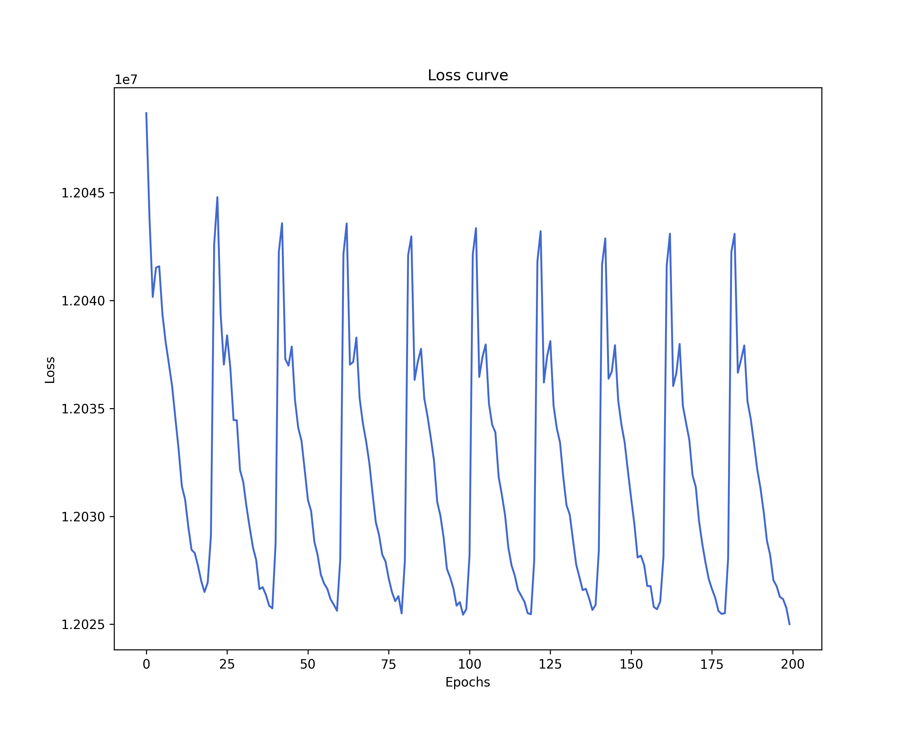
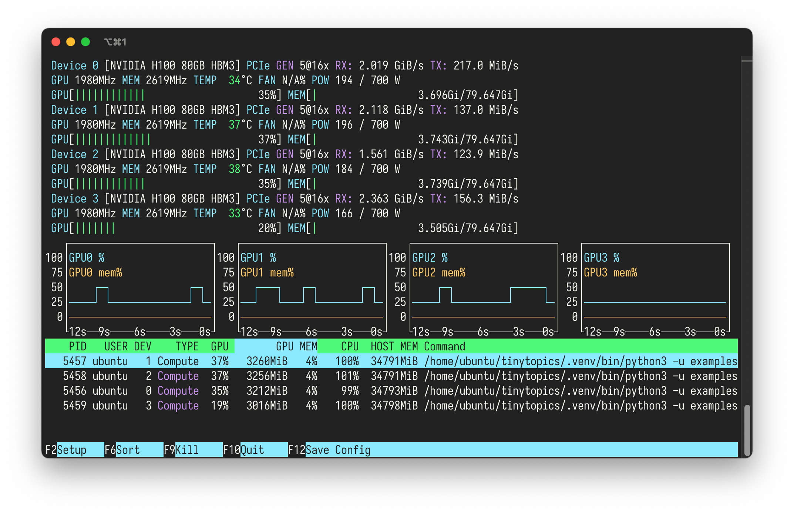

Distributed training¶
Overview¶
tinytopics >= 0.7.0 supports distributed training using Hugging Face Accelerate. This article demonstrates how to run distributed training on a single node with multiple GPUs.
The example utilizes Distributed Data Parallel (DDP) for distributed training. This approach assumes that the model parameters fit within the memory of a single GPU, as each GPU maintains a synchronized copy of the model. The input data can exceed the memory capacity. This is generally a reasonable assumption for topic modeling tasks, as storing the factorized matrices is often less memory-intensive.
Hugging Face Accelerate also supports other distributed training strategies such as Fully Sharded Data Parallel (FSDP) and DeepSpeed, which distribute model tensors across different GPUs and allow training larger models at the cost of speed.
Generate data¶
We will use a 100k x 100k count matrix with 20 topics for distributed training.
To generate the example data, save the following code to distributed_data.py
and run:
import os
import numpy as np
import tinytopics as tt
def main():
n, m, k = 100_000, 100_000, 20
data_path = "X.npy"
if os.path.exists(data_path):
print(f"Data already exists at {data_path}")
return
print("Generating synthetic data...")
tt.set_random_seed(42)
X, true_L, true_F = tt.generate_synthetic_data(
n=n, m=m, k=k, avg_doc_length=256 * 256
)
print(f"Saving data to {data_path}")
X_numpy = X.cpu().numpy()
np.save(data_path, X_numpy)
if __name__ == "__main__":
main()
Generating the data is time-consuming (about 10 minutes), so running it as a standalone script helps avoid potential timeout errors during distributed training. You can also execute it on an instance type suitable for your data ingestion pipeline, rather than using valuable GPU instance hours.
Run distributed training¶
First, configure the distributed environment by running:
You will be prompted to answer questions about the distributed training environment and strategy. The answers will be saved to a configuration file at:
You can rerun accelerate config at any time to update the configuration.
For data distributed parallel on a 4-GPU node, select single-node multi-GPU
training options with the number of GPUs set to 4, and use the default settings
for the remaining questions (mostly "no").
Next, save the following code to distributed_training.py and run:
import os
from accelerate import Accelerator
from accelerate.utils import set_seed
import tinytopics as tt
def main():
accelerator = Accelerator()
set_seed(42)
k = 20
data_path = "X.npy"
if not os.path.exists(data_path):
raise FileNotFoundError(
f"{data_path} not found. Run distributed_data.py first."
)
print(f"Loading data from {data_path}")
X = tt.NumpyDiskDataset(data_path)
# All processes should have the data before proceeding
accelerator.wait_for_everyone()
model, losses = tt.fit_model_distributed(X, k=k)
# Only the main process should plot the loss
if accelerator.is_main_process:
tt.plot_loss(losses, output_file="loss.png")
if __name__ == "__main__":
main()
This script uses fit_model_distributed() (added in tinytopics 0.7.0) to
train the model. Since distributed training on large datasets likely takes
longer, fit_model_distributed() displays more detailed progress bars for
each epoch, going through all batches in each epoch.
Sample runs¶
We ran the distributed training example on a 1-GPU, 4-GPU, and 8-GPU setup with H100 and A100 GPUs. The table below shows the training time per epoch, total time, GPU utilization, VRAM usage, instance cost, and total cost.
| Metric | 1x H100 (80 GB SXM5) | 4x H100 (80 GB SXM5) | 8x A100 (40 GB SXM4) |
|---|---|---|---|
| Time per epoch (s) | 24 | 6 | 6 |
| Total time (min) | 80 | 20 | 20 |
| GPU utilization | 16% | 30-40% | 30-50% |
| VRAM usage | 1% | 4% | 4% |
| Instance cost (USD/h) | 3.29 | 12.36 | 10.32 |
| Total cost (USD) | 4.38 | 4.12 | 3.44 |
Using 4 H100 GPUs is approximately 4x faster than using 1 H100 GPU, with a slightly lower total cost. Using 8x A100 GPUs has similar speed comparing to 4x H100 GPUs but with an even lower total cost due to the lower instance cost.
The loss plot and real-time GPU utilization monitoring via nvtop on the
4x H100 GPU instance are shown below.


For more technical details on distributed training, please refer to the Hugging Face Accelerate documentation, as this article covers only the basics.